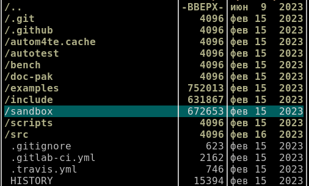

В Midnight Commander имеется возможность показать размер директорий прямо в списке директорий/файлов на файловой панели. Но как и все в Linux, сделано это максимально неудобно и нечитаемо.
Итак, чтобы увидеть размер директории, надо установить курсор (засветку) на заданную директорию и нажать Ctrl+Пробел. В столбце Размер будет показан суммарный размер всех файлов внутри директории включая файлы во всех подкаталогах. Выглядеть это будет следующим образом:

Здесь был запрошен размер у трех директорий: examples, include, sandbox. Размер отображается в байтах. Если размер будет большой, MC начнет отображать числа с суффиксами K, M, G.
У других директорий виден не их реальный размер, а размер блока inode, который показывается по-умолчанию. Как отличить настоящий размер файла от размера блока - непонятно. Надо просто ориентироваться на круглые числа из двоичной системы счисления (4096) и предполагать, что это не реальный размер директории.
Команды что бы показать размер всех директорий в текущей директории у MC нет.
Клавиатурного сочетания для показа резмеров каждого файла в МС нет, потому что это не нужно: реальные размеры файлов отображаются в списке файлов по-умолчанию.